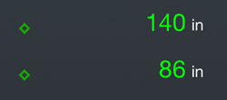
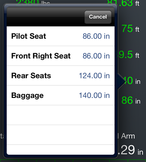

Weight and Balance Stations
When entering the arm for a particular station (pilot seat, passenger seat, luggage compartment), you can pick from a collection of predefined arm values if they are defined for a given aircraft.
If defined, a small diamond shows up to the left of the input field.
Tapping the diamond shows a popup with the station length and a label describing the position which you may pick from.
You may also enter a value separately instead of picking from a predefined station position.